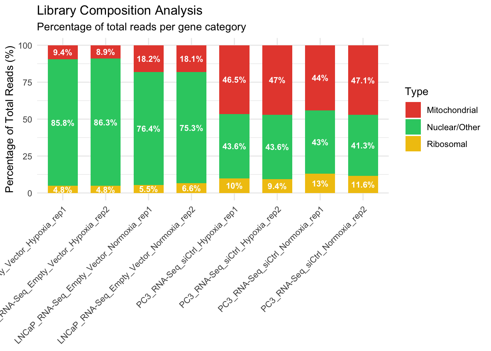
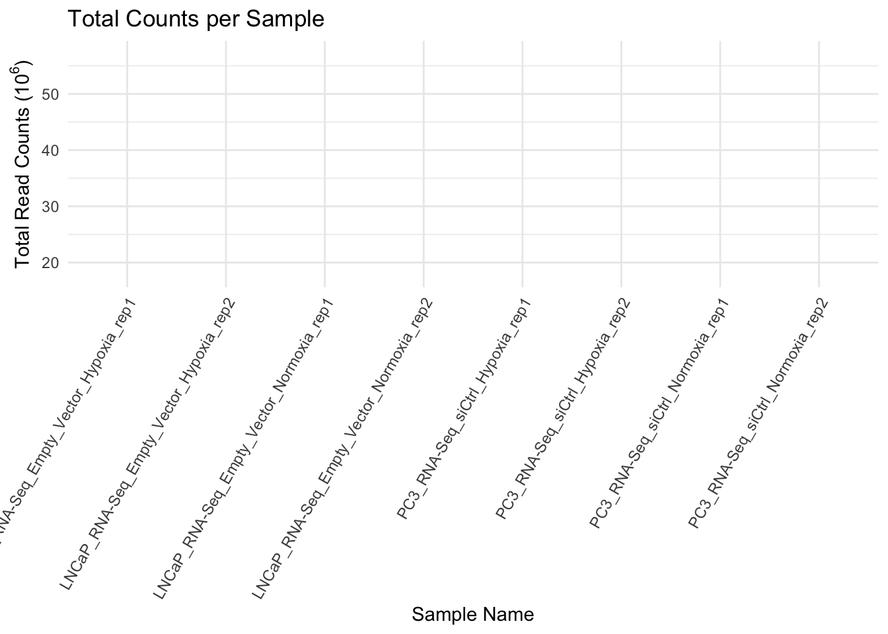

# Load necessary library
library(tidyverse)
library(here)
library(conflicted)
library(DESeq2)
library(ggplot2)
library(scales) # For readable axis labels
# Force R to use dplyr for select and filter
conflict_prefer("select", "dplyr")
conflict_prefer("filter", "dplyr")
conflicts_prefer(generics::setdiff)Counts_QC_before_DE
You can add options to executable code like this
#loading cleaned and annotated data
data <- read.csv("analysis_ready_count_data.csv", row.names = 1, check.names = FALSE)
#quick view of data imported- should have gene symbols as rowname and hypoxia data for two cell lines and treatment conditions as columns
head(data) LNCaP_RNA-Seq_Empty_Vector_Normoxia_rep1
A1BG 96
A2M 8
NAT1 613
NAT2 31
SERPINA3 158
AADAC 0
LNCaP_RNA-Seq_Empty_Vector_Normoxia_rep2
A1BG 188
A2M 9
NAT1 760
NAT2 34
SERPINA3 217
AADAC 0
LNCaP_RNA-Seq_Empty_Vector_Hypoxia_rep1
A1BG 94
A2M 7
NAT1 749
NAT2 29
SERPINA3 75
AADAC 0
LNCaP_RNA-Seq_Empty_Vector_Hypoxia_rep2
A1BG 126
A2M 7
NAT1 1149
NAT2 33
SERPINA3 55
AADAC 0
PC3_RNA-Seq_siCtrl_Normoxia_rep1 PC3_RNA-Seq_siCtrl_Normoxia_rep2
A1BG 6 5
A2M 8 14
NAT1 77 158
NAT2 0 1
SERPINA3 5 16
AADAC 19 43
PC3_RNA-Seq_siCtrl_Hypoxia_rep1 PC3_RNA-Seq_siCtrl_Hypoxia_rep2
A1BG 5 1
A2M 8 6
NAT1 133 45
NAT2 2 0
SERPINA3 5 4
AADAC 61 34#replacing the column names with smaller readble names
colnames(data) <- colnames(data) %>%
str_replace_all("Empty_Vector", "EV") %>%
str_replace_all("_RNA-Seq", "")#Defining metadata file and the rownames in the order of colnames of data
condition <- c(
rep("LNCAP_Normoxia",2),
rep("LNCAP_Hypoxia",2),
rep("PC3_Normoxia",2),
rep("PC3_Hypoxia",2)
)
metadata<- data.frame(condition, row.names = colnames(data))#plotting total counts per sample
summary(data) LNCaP_EV_Normoxia_rep1 LNCaP_EV_Normoxia_rep2 LNCaP_EV_Hypoxia_rep1
Min. : 0 Min. : 0 Min. : 0
1st Qu.: 1 1st Qu.: 1 1st Qu.: 1
Median : 31 Median : 39 Median : 30
Mean : 1407 Mean : 1729 Mean : 1299
3rd Qu.: 855 3rd Qu.: 1090 3rd Qu.: 852
Max. :1487915 Max. :1807568 Max. :813195
LNCaP_EV_Hypoxia_rep2 PC3_siCtrl_Normoxia_rep1 PC3_siCtrl_Normoxia_rep2
Min. : 0 Min. : 0.0 Min. : 0
1st Qu.: 1 1st Qu.: 0.0 1st Qu.: 1
Median : 35 Median : 8.0 Median : 22
Mean : 1482 Mean : 639.6 Mean : 1863
3rd Qu.: 985 3rd Qu.: 149.0 3rd Qu.: 400
Max. :818218 Max. :5077623.0 Max. :16570325
PC3_siCtrl_Hypoxia_rep1 PC3_siCtrl_Hypoxia_rep2
Min. : 0 Min. : 0
1st Qu.: 1 1st Qu.: 0
Median : 18 Median : 7
Mean : 1694 Mean : 570
3rd Qu.: 348 3rd Qu.: 122
Max. :15843114 Max. :5392463 The max in each sample is much higher than median/mean counts/sample, indicating genes with extreme counts (probably outliers). Lets prints the genes that have max values for each sample
top_genes_table <- data %>%
rownames_to_column(var = "Gene") %>%
pivot_longer(cols = -Gene, names_to = "Sample", values_to = "Counts") %>%
group_by(Sample) %>%
slice_max(order_by = Counts, n = 5) %>%
arrange(Sample, desc(Counts))# 1. Calculate the proportions of counts from mito/ribosomal and (efficiently grouping by Type)
qc_summary <- data %>%
rownames_to_column(var = "Gene") %>%
pivot_longer(cols = -Gene, names_to = "Sample", values_to = "Counts") %>%
mutate(
Type = case_when(
grepl("^MT-", Gene) ~ "Mitochondrial",
grepl("^RP[SL]|^RNA45S|^RNR[12]", Gene) ~ "Ribosomal",
TRUE ~ "Nuclear/Other"
)
) %>%
group_by(Sample, Type) %>%
summarise(Type_Total = sum(Counts), .groups = "drop") %>%
group_by(Sample) %>%
mutate(Percentage = (Type_Total / sum(Type_Total)) * 100)
# 2. Create the plot with centered labels
ggplot(qc_summary, aes(x = Sample, y = Percentage, fill = Type)) +
geom_bar(stat = "identity", width = 0.7) +
# position_stack(vjust = 0.5) places the text in the middle of each segment
geom_text(aes(label = paste0(round(Percentage, 1), "%")),
position = position_stack(vjust = 0.5),
size = 3, # Adjust size as needed
color = "white", # White text usually pops better on colored bars
fontface = "bold") +
theme_minimal() +
scale_fill_manual(values = c(
"Nuclear/Other" = "#16A085", # Teal
"Mitochondrial" = "#C0392B", # Terracotta
"Ribosomal" = "#F39C12" # Mustard
)) +
labs(title = "Library Composition Analysis",
subtitle = "Percentage of total reads per gene category",
y = "Percentage of Total Reads (%)",
x = NULL) + coord_cartesian(clip = "off") +
theme(
axis.text.x = element_text(angle = 60, hjust = 1,, size = 8),
# Add a little bit of padding to the whole plot to make sure it shows up
plot.margin = margin(10, 10, 10, 50)
) #theme(axis.text.x = element_text(angle = 45, hjust = 1))
The mitochondria and Ribosomal RNA counts are relatively low compared to the rest of the counts in LNCaP samples while PC3 samples show high mitochondrial gene counts across all samples. We see this behavior across normal and hypoxia samples so it could be a technical artifact.
# 1. Calculate column sums and convert to a data frame for plotting
# Calculate library sizes in millions
lib_size <- data.frame(
Sample = colnames(data),
Counts_Millions = colSums(data) / 1e6
)
# Create the plot
ggplot(lib_size, aes(x = Sample, y = Counts_Millions, fill = Sample)) +
geom_col()+
theme_minimal() +
theme(axis.text.x = element_text(angle = 60, hjust = 1,size=8)) +
labs(title = "Total Counts per Sample",
x = "Sample Name",
y = expression("Total Read Counts (" * 10^6 * ")")) +
guides(fill = "none")
LNCap counts are relatively consistent across sample while we observe variability even within biological condition for PC3 samples.